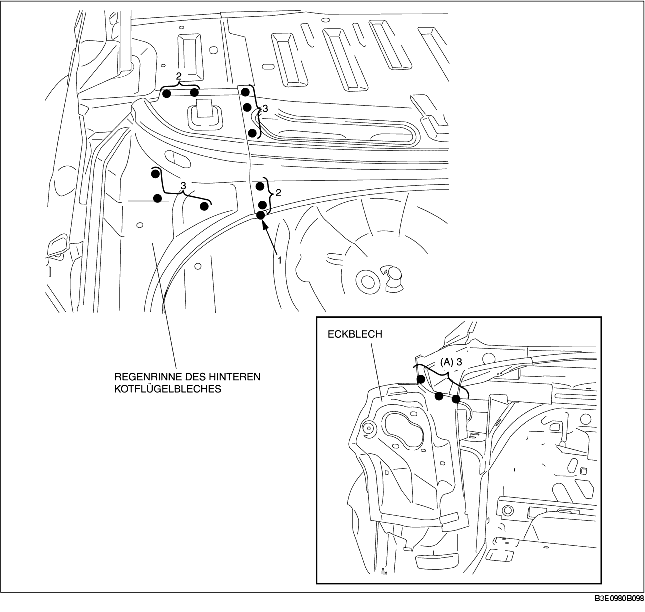
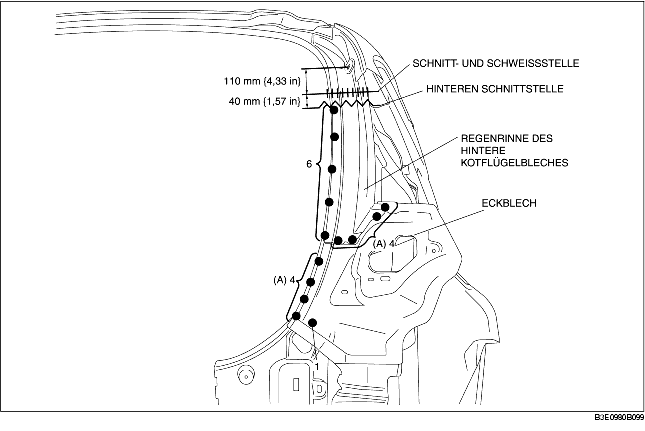

REGENRINNE DES HINTEREN KOTFLÜGELBLECHES UND ECKBLECH AUSBAUEN
B3E098070440B01
4SD
1. Regenrinne des hinteren Kotflügelbleches und Eckblech entfernen.
-
Hinweis
-
• Bei separatem Ausbau der Regenrinne des hinteren Kotflügelbleches und des Eckblechs die 3 mit (A) gekennzeichneten Stellen aufbohren.

5HB
1. Regenrinne des hinteren Kotflügelbleches und Eckblech entfernen.
-
Hinweis
-
• Bei separatem Ausbau der Regenrinne des hinteren Kotflügelbleches und des Eckblechs die 8 mit (A) gekennzeichneten Stellen aufbohren.
